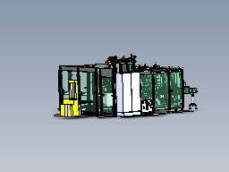

01
Industrieelektrik
Kabeltrassen, Kabelverlegung, Maschinen- und Anlageninstallation.
Elektromontage, Automation und qualifizierte Fachkräfte für anspruchsvolle Industrieprojekte.
STROMIND verbindet praktische Industrieerfahrung mit strukturierter Ausführung. Wir verstehen technische Unterlagen, koordinieren Montageabläufe und setzen elektrische Installationen präzise um.
Kabeltrassen, Kabelverlegung, Maschinen- und Anlageninstallation.
Verdrahtung und Installation von Antrieben, Sensorik und Automatisierungskomponenten.
Aufbau, Anschluss und Verdrahtung nach technischer Dokumentation.
Trassen, Halterungen und montagebegleitende Arbeiten im Industrieumfeld.
Technische Pläne sind für uns kein Beiwerk, sondern die Grundlage einer sauberen Installation. Von der Dokumentation bis zur Montage bleibt der Ablauf nachvollziehbar.

3D / ENGINEERINGUnser Team bringt praktische Erfahrung aus Industrie-, Logistik- und Automatisierungsprojekten in Deutschland und Europa mit.
Die genannten Unternehmen stehen für Projektumfelder, in denen Mitglieder unseres Teams praktische Erfahrung gesammelt haben; sie werden nicht als Kunden oder Partner von STROMIND dargestellt.
Mehr erfahren →Sie benötigen kurzfristig erfahrene Elektriker oder Montageteams? STROMIND verbindet technische Praxiserfahrung mit einer klaren Projektkoordination.
Personal anfragenMehr erfahren →Wir suchen Menschen, die Industrie nicht nur kennen, sondern verstehen.
Bewerbung und kurze fachliche Einschätzung.
Bewerben →Erfahrung, Verantwortung und direkter Austausch.
Direkt Kontakt aufnehmen →Direkter Kontakt für erfahrene Führungskräfte.
Direkt Kontakt aufnehmen →Wählen Sie den passenden Bereich für Ihre Anfrage.
Senden Sie uns die wichtigsten Projektdaten. So können wir Ihren Bedarf schnell einschätzen.
Zum Unternehmensbereich →Kurze Angaben reichen für den ersten Kontakt. Bei Monteuren folgt anschließend eine kurze fachliche Einschätzung.
Zum Karrierebereich →